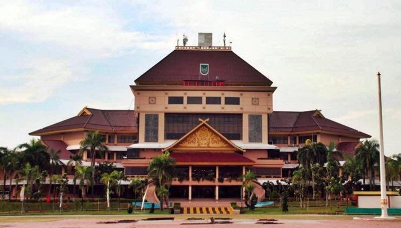
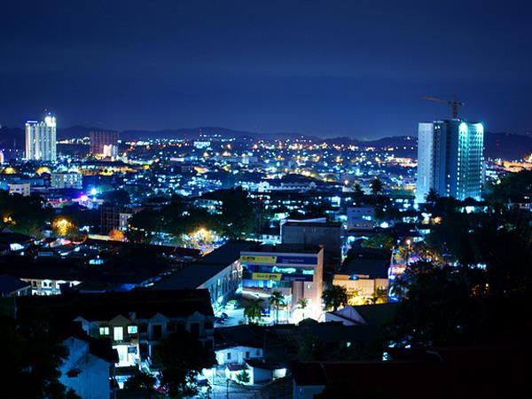
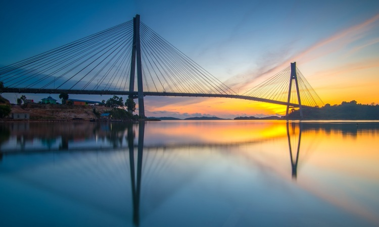
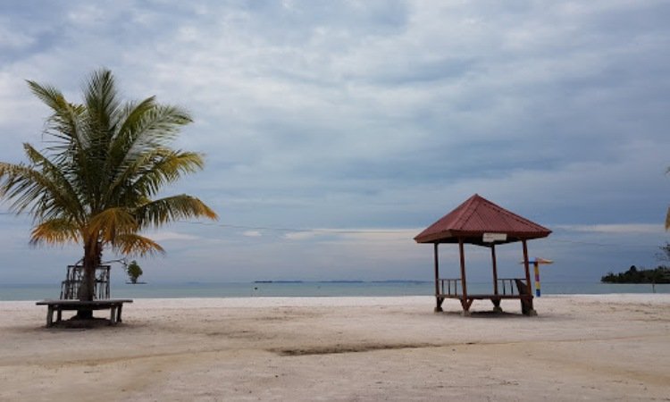
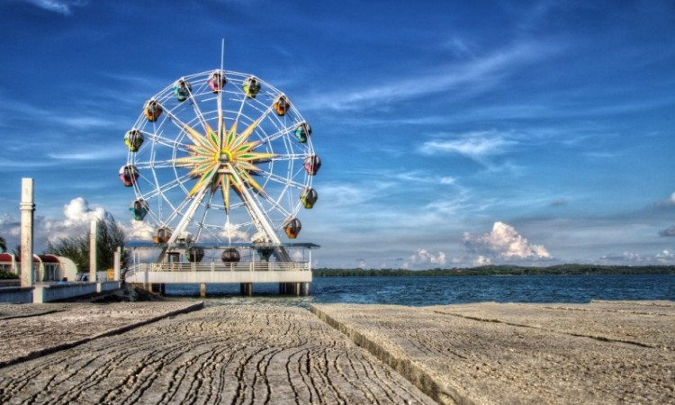
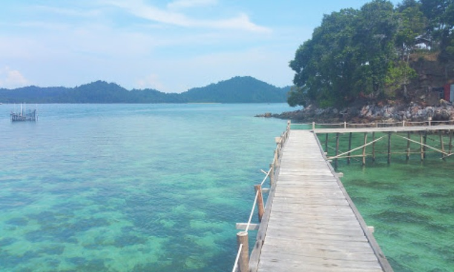

Sejarah

Pulau Batam dihuni pertama kali oleh orang melayu dengan sebutan orang selat sejak tahun 231 Masehi. Pulau yang pernah menjadi medan perjuangan Laksamana Hang Nadim dalam melawan penjajah ini digunakan oleh pemerintah pada dekade 1960-an
sebagai basis logistik minyak bumi di Pulau Sambu. Pada dekade 1970-an, dengan tujuan awal menjadikan Batam sebagai Singapura-nya Indonesia, maka sesuai Keputusan Presiden nomor 41 tahun 1973, Pulau Batam ditetapkan sebagai lingkungan
kerja daerah industri dengan didukung oleh Otorita Pengembangan Daerah Industri Pulau Batam atau lebih dikenal dengan Badan Otorita Batam (BOB) sebagai penggerak pembangunan Batam. Kini menjadi Badan Pengusahaan (BP Batam).Seiring
pesatnya perkembangan Pulau Batam, pada dekade 1980-an, berdasarkan Peraturan Pemerintah Nomor 34 tahun 1983, wilayah Kecamatan Batam yang merupakan bagian dari Kabupaten Kepulauan Riau, ditingkatkan statusnya menjadi Kotamadya Batam
yang memiliki tugas dalam menjalankan administrasi pemerintahan dan kemasyarakatan serta mendudukung pembangunan yang dilakukan Otorita Batam (BP Batam). Di era reformasi pada akhir dekade tahun 1990-an, dengan Undang-Undang nomor
53 tahun 1999, maka Kotamadya administratif Batam berubah statusnya menjadi daerah otonomi, yaitu Pemerintah Kota Batam untuk menjalankan fungsi pemerintahan dan pembangunan dengan mengikutsertakan Badan Otorita Batam (BP Batam).
Geografis

Kota yang merupakan bagian dari Provinsi Kepulauan Riau ini, memiliki luas wilayah daratan seluas 715 km², sedangkan luas wilayah keseluruhan mencapai 1.575 km². Kota Batam beriklim tropis dengan suhu rata-rata 26 sampai 34 derajat celsius.
Kota ini memiliki dataran yang berbukit dan berlembah. Tanahnya berupa tanah merah yang kurang subur dan cuaca yang sering berubah sehingga untuk dijadikan lahan pertanian hanya tanaman yang dapat tumbuh tanpa mengikuti musim. Batas-batas
Kota Batam:
| Utara |
Selat Singapura |
| Timur |
Pulau Bintan dan Tanjung pinang |
| Selatan |
Kabupaten Lingga |
| Barat |
Kabupaten Karimun |
kondisi Geografis Pulau batam yang dengan Singapura menyebabkan Pulau Batam berada di jalur perdagangan internasiaonal. Yang menyebabkan pertumbuhan ekonomi Kota Batam lebih tinggi dibandingkan dengan laju pertumbuhan ekonomi nasional
menjadikan wilayah ini andalan bagi pemacu pertumbuhan ekonomi secara nasional maupun bagi Provinsi Kepulauan Riau.
Wisata
Kota Batam memiliki pesona yang belum banyak diketahui orang banyak. Sering dikenal dengan kota industri menjadikan obyek wisatanya seolah tidak pernah terekspose dengan baik. Padahal dibalik sibuknya Batam sebagai kota industri, kota
yang menjadi pintu masuk menuju Singapura ini menyimpan keindahan tersembunyi. Di antara lain adalah:
Jembatan Barelang

Inilah sebuah jembatan yang berjasa dalam kemajuan perekonomian Kota Batam. Bagaimana tidak? Keberadaan jembatan ini telah menghubungkan pulau-pulau yang ada di Kota Batam. Terlepas dari itu semua, jembatan ini juga sering dimanfaatkan
sebagai objek wisata oleh para wisatawan dengan berfoto dengan latar belakang jembatan barelang. Biasanya akan banyak para pasangan muda yang menggunakan jembatan sebagai background foto karena seolah jembatan ini bagaikan penghubung
antara dua hati yang saling merindu. Selain berfoto, jembatan ini juga sering dimanfaatkan untuk bersantai oleh pengunjung di sepanjang sisinya.
Pantai Vio Vio

Nama yang unik dari pantai ini juga menjadi salah satu daya tarik pengunjungnya. Terletak di Pulau Galang, tempat wisata ini menawarkan pemandangan lautnya yang indah. Untuk memasuki wisata ini, Anda diwajibkan membayar Rp. 10.000.
Selain itu, Anda juga dapat menikmati fasilitas ayunan dan dipan berpayung yang berada di pinggir pantai. Salah satu yang menarik di sini adalah adanya sebuah ayunan yang berada di tengah pantai. Ayunan tinggi ini akan membuat
orang yang menaikinya dapat melihat pemandangan hamparan laut yang luas. Letaknya yang menghadap ke lautan juga membuatnya dapat menikmati senja dengan indah dan sempurna. Benda ini juga menjadi salah satu spot foto yang paling
difavoritkan oleh pengunjung.
Ocarina Park

Taman bermain di Batam ini menyajikan berbagai macam wahana permainan yang dapat dinikmati bersama keluarga. Objek Wisata di Batam ini juga kerap digunakan sebagai tempat diselengarakannya konser dan berbagai event sejenisnya. Tidak ada salahnya untuk
mengunjungi objek wisata Ocarian Park. Jangan ragu pula untuk menjajal wahana yang tersedia karena pasti aman. Anda juga bisa berfoto ria di sini karena ada banyak spot foto yang unik-unik.
Pulau Petong

Pulau ini termasuk wisata baru yang ada di Batam. Berjuluk ‘Surga Baru’, Pulau Petong menawarkan keindahan alam bawah laut yang juga menjadi daya tarik wisata ini. Terdapat beberapa jenis ikan dan terumbu karang yang hadir dan menghiasi tempat ini. Anda
juga dapat mengambil foto bertema underwater photoboot di sana. Pulau Petong termasuk dalam jajaran wisata yang memiliki perairan tenang. Disebutkan bahwa pulau ini diapit oleh dua bukit yang tinggi, oleh karena itu tidak ada ombak
yang sampai di sini. Dengan keadaan itu, maka wisata ini dapat dijadikan spot berenang yang menarik. Anda juga dapat menjajal pengalaman diving dan snorkeling di perairan ini.